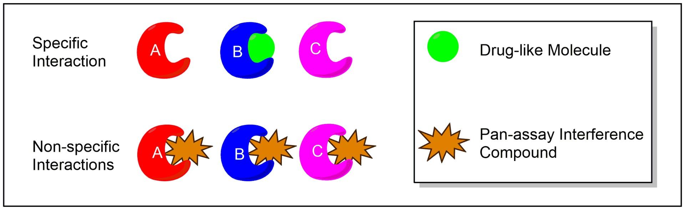
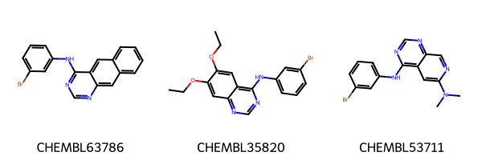
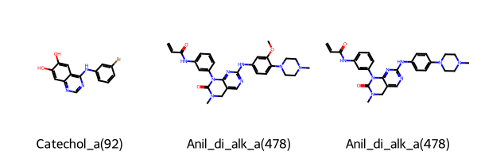
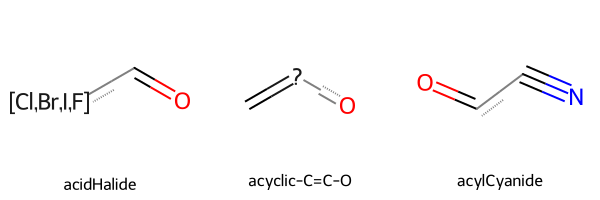
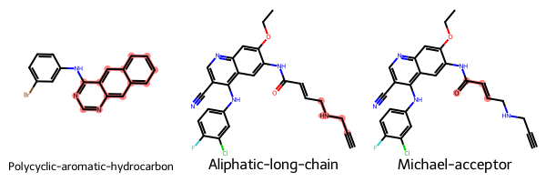

T003 · 分子筛选：不想要的子结构¶
注意： 本教程是 TeachOpenCADD 的一部分，该平台旨在教授特定领域技能，并为研究项目提供管道模板作为起点。
作者：
Maximilian Driller, CADD seminar, 2017, Charité/FU Berlin
Sandra Krüger, CADD seminar, 2018, Charité/FU Berlin
教程 T003：本教程是 首篇 TeachOpenCADD 论文 中描述的 TeachOpenCADD 流程的一部分，包括 T001-T010 教程。
本教程目标¶
在我们的筛选库中，有些子结构是我们不希望包含的。在本教程中，我们将学习不同类型的不想要的子结构，以及如何使用 RDKit 来查找、突出显示和移除它们。
理论内容¶
不想要的子结构
泛分析干扰化合物（PAINS）
实践内容¶
加载和可视化数据
筛选 PAINS
筛选不想要的子结构
突出显示子结构
子结构统计
参考文献¶
泛分析干扰化合物（wikipedia, J. Med. Chem. (2010), 53, 2719-2740）
Brenk et al. 定义的不想要的子结构（Chem. Med. Chem. (2008), 3, 435-44）
灵感来自 Teach-Discover-Treat 教程（repository）
RDKit（repository, documentation）
[1]:
import sys
if "google.colab" in sys.modules:
%pip install teachopencadd --no-deps -q
!teachopencadd -d 3
%pip uninstall teachopencadd -y -q
%pip install -qr requirements.txt
理论¶
不想要的子结构¶
子结构可能是不利的，例如，因为它们具有毒性或反应性，由于不利的药代动力学性质，或者因为它们可能干扰某些检测方法。如今，药物发现活动常常涉及高通量筛选。过滤不想要的子结构可以帮助组建更高效的筛选库，从而节省时间和资源。
Brenk 等人（Chem. Med. Chem. (2008), 3, 435-44）已经汇编了一个不利子结构的列表，用于筛选治疗被忽视疾病化合物的库。这些不想要特征示例包括硝基（致突变性）、硫酸盐和磷酸盐（可能导致不利的药代动力学性质）、2-卤代吡啶和硫醇（反应性）。该不想要子结构列表发表于上述论文中，并将用于本教程的实践部分。
泛分析干扰化合物（PAINS）¶
PAINS 是在高通量筛选（HTS）中经常出现的化合物，尽管它们实际上是假阳性。PAINS 在多个靶标上显示活性，而非针对特定靶标。这种行为是由非特异性结合或与检测成分的相互作用造成的。Baell 等人（J. Med. Chem. (2010), 53, 2719-2740）的研究聚焦于干扰检测信号的子结构。他们描述了可帮助识别此类 PAINS 的子结构，并提供了一个可用于子结构过滤的列表。

图 1： PAINS 背景下的特异性和非特异性结合。图取自 Wikipedia。
实践¶
加载和可视化数据¶
首先，我们导入所需的库，从教程 T002加载我们筛选过的数据集，并绘制出第一个分子。
[2]:
from pathlib import Path
import pandas as pd
from tqdm.auto import tqdm
from rdkit import Chem
from rdkit.Chem import PandasTools
from rdkit.Chem.FilterCatalog import FilterCatalog, FilterCatalogParams
/opt/miniconda3/envs/T003_3120/lib/python3.12/site-packages/tqdm/auto.py:21: TqdmWarning: IProgress not found. Please update jupyter and ipywidgets. See https://ipywidgets.readthedocs.io/en/stable/user_install.html
from .autonotebook import tqdm as notebook_tqdm
<frozen importlib._bootstrap>:488: RuntimeWarning: to-Python converter for boost::shared_ptr<RDKit::FilterHierarchyMatcher> already registered; second conversion method ignored.
[3]:
# 定义路径
HERE = Path(_dh[-1])
DATA = HERE / "data"
[4]:
# 从 Talktorial T2 加载数据
egfr_data = pd.read_csv(DATA / "EGFR_compounds_lipinski.csv", index_col=0)
# 删除不必要的信息
print("Dataframe shape:", egfr_data.shape)
egfr_data.drop(columns=["molecular_weight", "n_hbd", "n_hba", "logp"], inplace=True)
egfr_data.head()
Dataframe shape: (4635, 10)
[4]:
| molecule_chembl_id | IC50 | units | smiles | pIC50 | ro5_fulfilled | |
|---|---|---|---|---|---|---|
| 0 | CHEMBL63786 | 0.003 | nM | Brc1cccc(Nc2ncnc3cc4ccccc4cc23)c1 | 11.522879 | True |
| 1 | CHEMBL35820 | 0.006 | nM | CCOc1cc2ncnc(Nc3cccc(Br)c3)c2cc1OCC | 11.221849 | True |
| 2 | CHEMBL53711 | 0.006 | nM | CN(C)c1cc2c(Nc3cccc(Br)c3)ncnc2cn1 | 11.221849 | True |
| 3 | CHEMBL66031 | 0.008 | nM | Brc1cccc(Nc2ncnc3cc4[nH]cnc4cc23)c1 | 11.096910 | True |
| 4 | CHEMBL53753 | 0.008 | nM | CNc1cc2c(Nc3cccc(Br)c3)ncnc2cn1 | 11.096910 | True |
[5]:
# 添加分子列
PandasTools.AddMoleculeColumnToFrame(egfr_data, smilesCol="smiles")
# 绘制前 3 个分子
Chem.Draw.MolsToGridImage(
list(egfr_data.head(3).ROMol),
legends=list(egfr_data.head(3).molecule_chembl_id),
)
[5]:

筛选 PAINS¶
PAINS 过滤器已经在 RDKit 中实现（文档）。这种预定义的过滤器可以通过 FilterCatalog 类应用。让我们学习如何使用它。
[6]:
# 初始化过滤器
params = FilterCatalogParams()
params.AddCatalog(FilterCatalogParams.FilterCatalogs.PAINS)
catalog = FilterCatalog(params)
[7]:
# 搜索 PAINS
matches = []
clean = []
for index, row in tqdm(egfr_data.iterrows(), total=egfr_data.shape[0]):
molecule = Chem.MolFromSmiles(row.smiles)
entry = catalog.GetFirstMatch(molecule) # 获取第一个匹配的 PAINS
if entry is not None:
# 存储 PAINS 信息
matches.append(
{
"chembl_id": row.molecule_chembl_id,
"rdkit_molecule": molecule,
"pains": entry.GetDescription().capitalize(),
}
)
else:
# 收集不含 PAINS 的分子的索引
clean.append(index)
matches = pd.DataFrame(matches)
egfr_data = egfr_data.loc[clean] # 保留不含 PAINS 的分子
100%|██████████| 4635/4635 [00:18<00:00, 246.19it/s]
[8]:
# NBVAL_CHECK_OUTPUT
print(f"Number of compounds with PAINS: {len(matches)}")
print(f"Number of compounds without PAINS: {len(egfr_data)}")
Number of compounds with PAINS: 408
Number of compounds without PAINS: 4227
查看过滤出的前三个符合 PAINS 的结构
[9]:
Chem.Draw.MolsToGridImage(
list(matches.head(3).rdkit_molecule),
legends=list(matches.head(3)["pains"]),
)
[9]:

过滤并突出显示不需要的子结构¶
一些不需要的子结构列表，如 PAINS，已经在 RDKit 中实现。然而，也可以使用外部列表并手动获取子结构匹配。在这里，我们使用 Brenk 等人提供的列表（Chem. Med. Chem. (2008), 3, 535-44）中的支持信息。
[10]:
substructures = pd.read_csv(DATA / "unwanted_substructures.csv", sep=r"\s+")
substructures["rdkit_molecule"] = substructures.smarts.apply(Chem.MolFromSmarts)
print("Number of unwanted substructures in collection:", len(substructures))
# NBVAL_CHECK_OUTPUT
Number of unwanted substructures in collection: 105
让我们来看一看一些子结构。
[11]:
Chem.Draw.MolsToGridImage(
mols=substructures.rdkit_molecule.tolist()[2:5],
legends=substructures.name.tolist()[2:5],
)
[11]:

在我们过滤后的 DataFrame 中搜索与这些不需要的子结构的匹配项。
[12]:
# 搜索不想要的子结构
matches = []
clean = []
for index, row in tqdm(egfr_data.iterrows(), total=egfr_data.shape[0]):
molecule = Chem.MolFromSmiles(row.smiles)
match = False
for _, substructure in substructures.iterrows():
if molecule.HasSubstructMatch(substructure.rdkit_molecule):
matches.append(
{
"chembl_id": row.molecule_chembl_id,
"rdkit_molecule": molecule,
"substructure": substructure.rdkit_molecule,
"substructure_name": substructure["name"],
}
)
match = True
if not match:
clean.append(index)
matches = pd.DataFrame(matches)
egfr_data = egfr_data.loc[clean]
100%|██████████| 4227/4227 [00:31<00:00, 134.35it/s]
[13]:
# NBVAL_CHECK_OUTPUT
print(f"Number of found unwanted substructure: {len(matches)}")
print(f"Number of compounds without unwanted substructure: {len(egfr_data)}")
Number of found unwanted substructure: 3234
Number of compounds without unwanted substructure: 2088
高亮显示子结构¶
让我们看看前 3 个被识别的不需要的子结构。由于我们可以访问底层的 SMARTS 模式，我们可以在 RDKit 分子中突出显示这些子结构。
[14]:
to_highlight = [
row.rdkit_molecule.GetSubstructMatch(row.substructure) for _, row in matches.head(3).iterrows()
]
Chem.Draw.MolsToGridImage(
list(matches.head(3).rdkit_molecule),
highlightAtomLists=to_highlight,
legends=list(matches.head(3).substructure_name),
)
[14]:

子结构统计¶
最后，我们想要找到在我们数据集中发现的最频繁的子结构。Pandas 的 DataFrame 提供了方便的方法来分组包含的数据并检索组的大小。
[15]:
# NBVAL_CHECK_OUTPUT
groups = matches.groupby("substructure_name")
group_frequencies = groups.size()
group_frequencies.sort_values(ascending=False, inplace=True)
group_frequencies.head(10)
[15]:
substructure_name
Michael-acceptor 1113
Aliphatic-long-chain 489
Oxygen-nitrogen-single-bond 367
triple-bond 252
nitro-group 177
imine 150
Thiocarbonyl-group 114
aniline 64
halogenated-ring 62
conjugated-nitrile-group 59
dtype: int64
讨论¶
在这篇教程中，我们学习了使用 RDKit 进行不想要的子结构搜索的两种可能性：
FilterCatalog类可以用来搜索预定义的子结构集合，例如 PAINS。HasSubstructMatch()函数用于执行手动子结构搜索。
实际上，PAINS 过滤也可以通过 HasSubstructMatch() 进行手动子结构搜索来实现。此外，Brenk 等人定义的子结构已经在 FilterCatalog 中实现。其他预定义集合可以在 RDKit 的文档中找到。
到目前为止，我们一直在使用 HasSubstructMatch() 函数，该函数只返回每个化合物的一个匹配项。使用 GetSubstructMatches() 函数（文档），我们有机会识别化合物中特定子结构的所有出现。
在 PAINS 的情况下，我们只看了每个分子的第一个匹配项（GetFirstMatch()）。如果我们只是想过滤掉所有的 PAINS，这就足够了。然而，我们也可以使用 GetMatches() 来查看一个分子的所有关键子结构。
检测到的子结构可以以两种不同的方式处理：
要么，子结构搜索被应用为过滤器，化合物被排除在进一步测试之外，以节省时间和金钱。
或者，它们可以作为警告使用，因为大约 5% 的 FDA 批准药物被发现含有 PAINS（ACS. Chem. Biol. (2018), 13, 36-44）。在这种情况下，专家可以手动判断，识别出的子结构是否关键。
课后思考¶
我们为什么要考虑从筛选库中移除 PAINS？这些化合物有什么问题？
你能找出一些不需要移除的不想要的子结构的情况吗？
我们在本教程中使用的子结构是如何编码的？